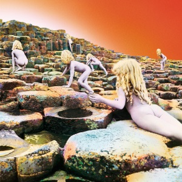
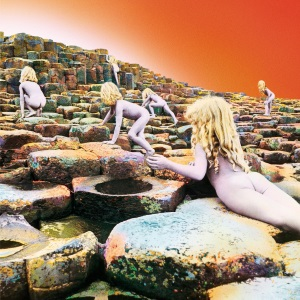

Led Zeppelin were an English rock band formed in London in 1968. The group consisted of guitarist Jimmy Page, singer Robert Plant, bassist and keyboardist John Paul Jones, and drummer John Bonham.
The band's heavy, guitar-driven sound has led them to be cited as one of the progenitors of heavy metal. Their style drew from a wide variety of influences, including blues, psychedelia, and folk music.
Led Zepplin 1
- Released 12 January 1969
- Recorded 1968 Studio Olympic Studios, London
- Genre: Hard rockheavy
- Label: Atlantic
Led Zeppelin is the eponymous debut album by English rock band Led Zeppelin. It was released on 12 January 1969 in the United States and on 31 March in the United Kingdom by Atlantic Records.
The album was recorded in September and October 1968 at Olympic Studios, London, shortly after the band's formation. It contains a mix of original material worked out in the first rehearsals, and covers and rearrangements of contemporary blues and folk songs. The sessions took place before the group had secured a recording contract and were paid for directly, and took 36 hours and less than £2,000 to complete. The album showed the group's fusion of blues and rock, and their take on the emerging hard rock sound was immediately commercially successful in both the UK and US. Although the album was not critically well-received when first released, critics have since come to view it in a more favourable light.
Led Zepplin II
- Released October 1969
- Recorded 1969 Studio Olympic Studios, London
- Genre: Hard rockheavy
- Label: Atlantic
Led Zeppelin II is the second album by the English rock band Led Zeppelin,
released on 22 October 1969 in the United States and on 31 October 1969 in the United Kingdom by Atlantic Records. The album's production was credited to the band's lead guitarist and songwriter Jimmy Page. Led Zeppelin II exhibited the band's evolving musical style of blues-derived material and their guitar riff-based sound. It has been described as the band's heaviest album.
Led Zeppelin II was a commercial success, and was the band's first album to reach number one on charts in the UK and the US. In 1970, the album's cover designer David Juniper was nominated for a Grammy Award for Best Recording Package. On 15 November 1999, the album was certified 12× Platinum by the Recording Industry Association of America (RIAA) for sales passing 12 million copies. Since its release, various writers and music critics have regularly cited Led Zeppelin II as one of the greatest and most influential albums of all time.
Led Zepplin III
- Released October 1970
- Recorded 1969-70 Olympic Studios, London
- Genre: Folk Rock
- Label: Atlantic
Led Zeppelin III is the eponymous third studio album by the English rock band Led Zeppelin, released in October 1970. It showed a progression from straightforward rock towards folk and acoustic music.
The acoustic material developed from a songwriting session between band members Jimmy Page and Robert Plant at Bron-Yr-Aur cottage in Wales, which influenced the musical direction. The songs were recorded using the Rolling Stones Mobile Studio, Headley Grange, Island Studios, and Olympic Studios in London. While hard rock influences were still present, such as "Immigrant Song", acoustic-based songs such as "Gallows Pole" and "That's the Way" showed Led Zeppelin were capable of playing different styles successfully.
The album was one of the most anticipated of 1970, and its shipping date was held up by the intricate inner sleeve design based around a volvelle, with numerous images visible through holes in the outer cover. It was an immediate commercial success upon release and topped the UK and US charts. Although critics were initially confused over the change in musical style and gave the album a mixed response, Led Zeppelin III has since been acknowledged as representing an important milestone in the band's history, and a turning point in their music.


 
